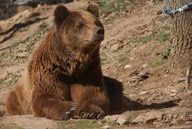

QUI SOM
Som una organització dedicada a l'estudi i la conservació dels ossos del Pirineu. La nostra missió és protegir aquesta espècie emblemàtica i garantir la seva supervivència a llarg termini en el seu hàbitat natural. A través de la recerca científica, el seguiment dels individus i la implementació de mesures de conservació, treballem per mantenir un equilibri sostenible entre els ossos i l'ecosistema pirinenc.
El nombre d'ossos a Catalunya ha variat al llarg dels anys, especialment amb els esforços de reintroducció que s'han dut a terme. Aquests esforços es concentren principalment a la regió dels Pirineus. A Catalunya, la població d'ossos és part d'un grup més gran que s'estén pels Pirineus centrals, compartint territori amb França i Andorra. Els programes de reintroducció van començar a la dècada de 1990, amb l'alliberament d'ossos provinents d'Eslovènia per reforçar la població local, que estava gairebé extinta. Segons les dades més recents (del 2022), es calcula que hi ha al voltant de 70-80 ossos en tota la zona dels Pirineus centrals, incloent-hi Catalunya. És important tenir en compte que aquests números poden fluctuar a mesura que els ossos es mouen entre les fronteres de França, Andorra i Espanya, i també depenent dels nous naixements i altres factors naturals. Els esforços per monitoritzar i protegir els ossos inclouen el seguiment de rastres, l'ús de collarets amb GPS i la cooperació internacional per assegurar la conservació d'aquesta espècie emblemàtica dels Pirineus.
